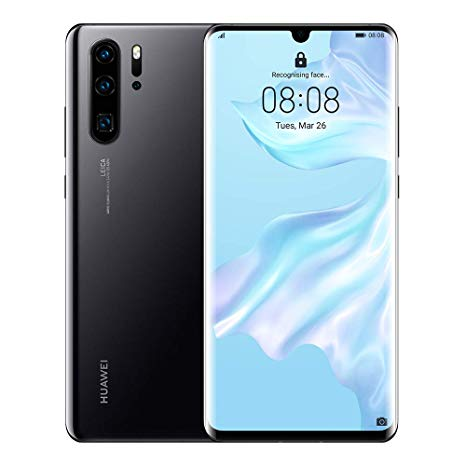

Huawei P30 Pro
Haz zoom para explorar el misterio de lo celestial durante la noche, observa un águila sobre los árboles
o examina los delicados detalles del cristal. Captura las mejores cosas en el momento exacto y crea tu visión
para el futuro. El HUAWEI P30 Pro acentúa un nuevo esplendor en la fotografía de smartphones.

Camaras
El sistema de cuatro cámaras de Leica se adapta a tus fotografías para ayudartea ver el mundo en su totalidad.
Este inigualable sistema de súper cámara incluye un objetivo SuperZoom, una increíble cámara de detección de 40 MP,
un objetivo ultra gran angular de 20 MP y una cámara con modo de tiempo de vuelo (Time of flight, TOF)de HUAWEI que
te ofrece la libertad de recordar tus increíbles momentos.
El nuevo teleobjetivo de tipo periscopio permite aumentar la capacidad de zoom óptico en un cuerpo compacto sin perder
la calidad de imagen. Junto con la saturación de color proporcionada por la cámara principal de 40 MP y la estabilidad
de AIS y OIS, el objetivo SuperZoom ofrece un zoom híbrido de 10x1 para ver lo nunca antes visto con gran resolución y
gran detalle. Además, puede acercarte la luna al alcance de tus ojos con un zoom de hasta 50x.
Resistencia
Para las almas aventureras, el HUAWEI P30 Pro está protegido con resistencia
al agua y al polvo IP687. Estás a salvo de salpicaduras o caídas repentinas en el agua.
El Kirin 980 es el primer conjunto de chips de procesamiento móvil de 7 nm del mundo con mayor
rendimiento y menor consumo. Este innovador conjunto de chips y hasta 8 GB de RAM y 256 GB de
memoria de almacenamiento8 muestran el gran potencial de rendimiento en el HUAWEI P30 Pro.
Experimenta más cada día con el soporte completo de una batería de 4,200 mAh9 de larga duración
con tecnología inteligente de ahorro de energía.
La carga ya no es una molestia, sino una tarea sin complicaciones. Carga tu teléfono a un 70% de
potencia en 30 minutos10 antes de salir de tu casa o durante un descanso para tomar café.
Caracteristicas y especificaciones
Pantalla:
6.7 pulgadas OLED Curva
Resolución:
2,340x1,080 pixeles
Procesador:
2.6GHz Kirin 980 (ocho núcleos)
RAM:
8GB
Almacenamiento:
128GB, 256GB, 512MB
Ranura microSD:
Sí
Batería:
4,200mAh (no extraíble)
Sistema operativo:
Android Pie (MUI 9.1)
Carga rápida:
Quick Charge 2.0
Carga inalámbrica:
Sí, con carga reversible
Conectividad:
4G/LTE, Bluetooth, infrarrojos
Funciones de desbloqueo:
Lector de huellas en pantalla, reconocimiento facial, patrón, PIN, contraseña
Cámara trasera: Cuatro:
40 megapixeles (f/1.6) OIS + 20 megapixeles (f/2.2) + 8 megapixeles (f/3.4 - zoom óptico 5x) OIS + TOF
Cámara frontal:
32 megapixeles (f/2.0)
Resistente al agua:
IP68
Tamaño:
157.6x74.1x7.8mm
Peso:
192 gramos